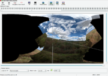

Finestra dell'anteprima veloce di hugin
Come la più accurata finestra dell'anteprima di hugin, l'anteprima veloce mostra un'immagine simile al risultato finale assemblato, ma con alcune importanti differenze:
- vengono utilizzate delle immagini a risoluzione ridotta, quindi alcune aree possono apparire sfocate anche se poi saranno nitide nell'immagine finale;
- non vengono create le cuciture; le immagini sono semplicemente sovrapposte inserendo la prima in fondo alla pila e l'ultima in cima;
- la fusione realizzata da uno strumento quale enblend non è mostrata;
- la luminosità della visualizzazione in HDR e di immagini a 16 bit è controllata impostando le preferenze di hugin; queste impostazioni non sono utilizzate durante l'assemblatura. La colorazione di queste immagini risulterà inoltre inaccurata utilizzando la correzione dell'esposizione o del bilanciamento del bianco. Per i panorami HDR, si raccomanda invece di utilizzare la finestra dell'anteprima di hugin;
- la correzione fotometrica comprende solamente il bilanciamento del bianco e l'esposizione, a meno che non sia abilitata la correzione fotometrica completa tramite il pulsante «fotometria»;
- la rimappatura è approssimativa, il risultato di uno strumento quale nona è più accurato. Se si è più interessati a questi aspetti che alla velocità, usare la finestra di anteprima di hugin;
- è molto più veloce ;-).
Pulsanti
Ogni pulsante che appare in entrambe le finestre di anteprima funziona allo stesso modo; consultare la guida alla finestra dell'anteprima di hugin su come utilizzarli. I pulsanti specifici della finestra di anteprima veloce sono descritti nel seguito.
 Fotometria
Fotometria
Abilita la correzione fotometrica completa. Quando è abilitata, si riscontrerà un ritardo significativo alla variazione dei parametri fotometrici. Inoltre sarà impiegato un po' di tempo all'abilitazione o alla disabilitazione dell'opzione. Comunque, quando è abilitata, si avrà una migliore rappresentazione dei colori del risultato finale. Quando invece è disabilitata si avrà la correzione solamente di bilanciamento del bianco ed esposizione. Abilitandola si avrà anche la correzione della vignettatura e della risposta del colore. La finestra dell'anteprima di hugin fornisce tutte queste opzioni di default, quindi si può voler utilizzare direttamente quest'ultima.
 Trascina
Trascina
Utilizzando questo strumento è possibile centrare il panorama interattivamente. Con questa opzione abilitata, provare a:
- trascinare il panorama con il tasto sinistro del mouse per ruotare le immagini che compongono il panorama stesso. Il centro di rotazione è rappresentato dal punto nel quale è stato premuto il tasto sinistro del mouse;
- mantenere premuto il tasto «shift» mentre si esegue l'operazione descritta nel punto precedente per bloccare il movimento solo per imbardata e inclinazione. Si noti come l'inclinazione sia influenzata dal centro di rotazione;
- trascinare il panorama con il tasto destro del mouse o tenere premuto il tasto «Ctrl» e trascinare con il sinistro per rollare il panorama (ruotarlo attorno al centro).
Se il panorama contiene dei componenti non connessi, questi verranno spostati individualmente.
Premere di nuovo il pulsante per disabilitarlo.
 Ritaglio
Ritaglio
Utilizzando questo strumento è possibile impostare la regione di ritaglio del risultato finale interattivamente. Se invece si desiderasse impostarla con maggiore precisione, utilizzare la linguetta dell'assemblatore. Inizialmente, l'intero panorama è la regione di output (cioè non è ritagliato niente).
Per cambiare il ritaglio su ogni lato, muovere il mouse verso il lato desiderato fino a quando appare un riquadro bianco lungo di esso; trascinarlo poi, con il tasto sinistro del mouse, fino alla posizione desiderata. Le aree più scure rappresentano le regioni scartate. È anche possibile spostare due lati contemporaneamente spostando il mouse nell'angolo condiviso da entrambi fino a far comparire su entrambi un riquadro bianco. Se si desidera invece spostare l'intera regione in una volta sola, spostare il mouse al centro, in modo che ogni lato abbia su di esso un riquadro bianco, e trascinare.
Premere di nuovo il pulsante per disabilitare questa modalità.
 Identifica
Identifica
Utilizzando questo strumento è possibile identificare dove sono le proprie immagini, e farle corrispondere ai rispettivi numeri; è anche possibile modificare i punti di controllo.
Quando questo strumento è abilitato, spostare il mouse sui pulsanti di visibilità delle immagini (i numeri in alto nell'anteprima). L'immagine corrispondente al numero su cui si trova il cursore del mouse, si illuminerà di rosso nell'anteprima. Spostando il mouse sul panorama, tutte le immagini toccate dal cursore del mouse verranno illuminate con colori diversi. I pulsanti corrispondenti a queste immagini saranno illuminati con gli stessi colori.
Quando il cursore si trova nell'area di sovrapposizione di due immagini, fare clic per modificare i punti di controllo tra le due immagini.
Modalità unione
La modalità di unione normale disegnerà le immagini come una pila. La modalità di unione differenza farà lo stesso con la differenza che l'immagine situata sotto al cursore del mouse verrà sottratta dal resto della pila. Utilizzare questa funzionalità per determinare l'allineamento è stato eseguito correttamente: se vengono visualizzati dei contorni nell'immagine sottratta, questi sono disallineati. Questa visualizzazione non è accurata al 100%; l'altra anteprima ha un metodo di differenza migliore.
In pratica

Verrà ora illustrato come utilizzare questa anteprima per correggere un panorama per cui l'allineamento automatico ha fallito. Questo panorama è stato catturato in un momento in cui diversi oggetti erano mossi dal vento e le nuvole si spostavano velocemente; non deve quindi sembrare strano che l'allineamento automatico abbia fallito. La linguetta dell'assistente indica che esistono diversi gruppi di immagini non connessi. È possibile ottimizzare il panorama e ottenere delle immagini posizionate correttamente se all'interno di un gruppo, ma i gruppi saranno non allineati tra loro. Provare prima con questa possibilità.
Utilizzando lo strumento «trascina», è possibile allineare approssimativamente i gruppi tra loro:
- abilitare lo strumento con il pulsante trascina;
- trascinare ogni componente in modo da posizionare l'orizzonte al centro, utilizzando il pulsante sinistro del mouse;
- trascinare, con il tasto destro del mouse (o tenendo premuto «Ctrl»e trascinando con il sinistro), per livellare l'orizzonte;
Ruotare le immagini con lo strumento «trascina».

- tenere premuto «Shift» e trascinare di lato con il tasto sinistro del mouse per allineare approssimativamente l'immagine con gli altri gruppi.
Quando si hanno le immagini approssimativamente nella giusta posizione, è possibile iniziare a inserire dei punti di controllo per guidare l'ottimizzatore. Lo strumento «identifica» viene in aiuto per questo compito. Prima di tutto, abilitare questo strumento; spostare poi il mouse sull'area di sovrapposizione appena creata tra due gruppi di immagini. Le immagini interessate si colorano. Spostare il mouse in una posizione in cui sono presenti solo due immagini e fare clic. Le due immagini verranno aperte nell'editor dei punti di controllo (potrebbe esserci un ritardo mentre le immagini vengono caricate). Una volta che i punti di controllo sono stati inseriti manualmente, è possibile tornare all'anteprima per trovare altre coppie di immagini.
Quando si è soddisfatti del numero di punti di controllo che il proprio panorama contiene; ottimizzarlo di nuovo. Probabilmente il panorama avrà l'orizzontale all'angolo errato; in questo caso premere il pulsante Raddrizza nella finestra di anteprima. È poi possibile incorniciare il panorama utilizzando lo strumento «trascina» (tenere premuto «shift» in modo da non renderlo ondulato di nuovo!). Se si desidera ritagliare il proprio panorama, fare clic su ritaglio e trascinare i lati del rettangolo di ritaglio.